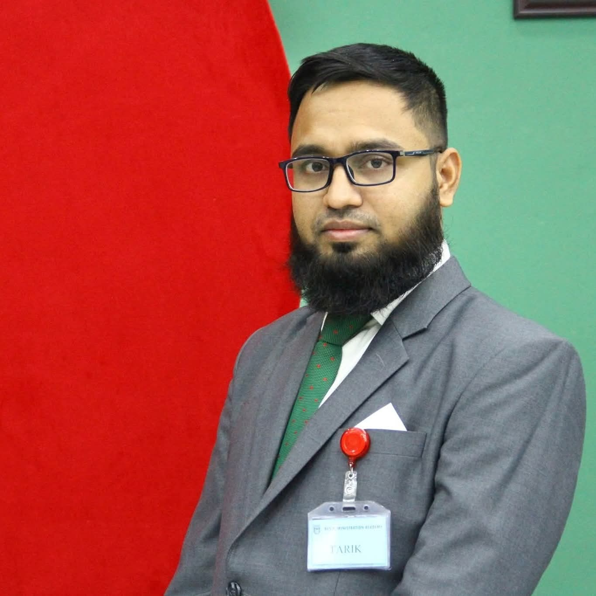

"Working at the intersection of public administration, economics, local governance and citizen-centred development." "জনপ্রশাসন, অর্থনীতি, স্থানীয় শাসন ও নাগরিক-কেন্দ্রিক উন্নয়নের সংযোগস্থলে।"
Member of the Bangladesh Civil Service Administration Cadre (36th Batch). Master of Economics from the Australian National University as an Australia Awards Scholar. Recipient of the Integrity Award-2022 and the Rector's Award. বাংলাদেশ সিভিল সার্ভিস প্রশাসন ক্যাডারের সদস্য (৩৬তম ব্যাচ)। অস্ট্রেলিয়া অ্যাওয়ার্ডস স্কলার হিসেবে অস্ট্রেলিয়ান ন্যাশনাল ইউনিভার্সিটি থেকে অর্থনীতিতে মাস্টার্স। ২০২২ সালের শুদ্ধাচার পুরস্কার এবং রেক্টর'স অ্যাওয়ার্ড প্রাপ্ত।

I joined the Bangladesh Civil Service Administration Cadre through the 36th BCS as an officer trained in finance and economics. My professional life sits at the meeting point of administrative practice and evidence-based policy — I believe that better public service depends on both empathy in the field and rigour in the analysis behind our decisions.অর্থ ও ফিন্যান্সে প্রশিক্ষিত একজন কর্মকর্তা হিসেবে ৩৬তম বিসিএসের মাধ্যমে বাংলাদেশ সিভিল সার্ভিস প্রশাসন ক্যাডারে যোগদান করি। আমার পেশাগত জীবন প্রশাসনিক অনুশীলন এবং প্রমাণ-ভিত্তিক নীতিমালার সংযোগস্থলে অবস্থিত — আমি বিশ্বাস করি, উন্নত জনসেবা মাঠপর্যায়ের সহানুভূতি এবং সিদ্ধান্তের পেছনে বিশ্লেষণের নিষ্ঠা — উভয়ের উপর নির্ভর করে।
Over nine years, I have served across Rajshahi, Barishal, Jhalakathi and Munshiganj — first as an Assistant Commissioner, then as Assistant Commissioner (Land), and now as Upazila Nirbahi Officer of Bancharampur, Brahmanbaria. Field administration has taught me that policy meets people at the counter of a land office, at the door of a housing project, in the small courtrooms of a mobile court.নয় বছরেরও বেশি সময় ধরে রাজশাহী, বরিশাল, ঝালকাঠি ও মুন্সিগঞ্জে সহকারী কমিশনার, সহকারী কমিশনার (ভূমি) এবং বর্তমানে ব্রাহ্মণবাড়িয়ার বাঞ্ছারামপুরে উপজেলা নির্বাহী অফিসার হিসেবে দায়িত্ব পালন করছি। মাঠ প্রশাসন আমাকে শিখিয়েছে — নীতি ও মানুষ পরস্পরের মুখোমুখি হয় ভূমি অফিসের কাউন্টারে, আশ্রয়ণ প্রকল্পের দরজায়, মোবাইল কোর্টের ছোট আদালতে।
As an Australia Awards Scholar, I completed my Master of Economics at the Australian National University, focusing on macroeconomic policy, public finance, and applied econometrics. Studying abroad reinforced a conviction I already held — that public administration in Bangladesh must be responsive, humane, and grounded in evidence.অস্ট্রেলিয়া অ্যাওয়ার্ডস স্কলার হিসেবে অস্ট্রেলিয়ান ন্যাশনাল ইউনিভার্সিটি থেকে অর্থনীতিতে মাস্টার্স সম্পন্ন করেছি — যেখানে ম্যাক্রোঅর্থনীতি, পাবলিক ফাইন্যান্স ও প্রায়োগিক ইকোনোমেট্রিক্সে গুরুত্ব দিয়েছি। বিদেশে অধ্যয়ন আমার একটি বিশ্বাসকে আরও দৃঢ় করেছে — বাংলাদেশের জনপ্রশাসন হতে হবে সংবেদনশীল, মানবিক এবং প্রমাণ-নির্ভর।
"Public administration is most meaningful when institutions remain accessible, decisions remain humane, and development responds to the real needs of citizens." "জনপ্রশাসন সবচেয়ে অর্থবহ হয় যখন প্রতিষ্ঠান হয় নাগরিকের দোরগোড়ায়, সিদ্ধান্ত হয় মানবিক, এবং উন্নয়ন হয় মানুষের প্রকৃত প্রয়োজনের প্রতিফলন।"
Selected initiatives from field administration — combining service delivery, civic infrastructure, and community welfare.মাঠপ্রশাসনের নির্বাচিত উদ্যোগ — সেবা প্রদান, নাগরিক অবকাঠামো ও জনকল্যাণের সংমিশ্রণে।
Establishing a public library at the Upazila office to broaden access to books and quiet study space for students and citizens.শিক্ষার্থী ও নাগরিকদের জন্য বই ও পাঠের সুযোগ বিস্তৃত করতে উপজেলা কার্যালয়ে একটি পাবলিক লাইব্রেরি প্রতিষ্ঠা।
Reclaiming and beautifying public land to create shared civic spaces for families, elderly citizens, and community gatherings.পরিবার, বয়স্ক নাগরিক ও সম্প্রদায়ের সমাবেশের জন্য পাবলিক জমি উদ্ধার ও সৌন্দর্যায়ন।
Site selection, construction monitoring, and beneficiary identification for the government's flagship housing initiative for landless and homeless families.ভূমিহীন ও গৃহহীন পরিবারের জন্য সরকারের অগ্রাধিকার আশ্রয়ণ কর্মসূচির স্থান নির্বাচন, নির্মাণ তদারকি ও উপকারভোগী নির্ধারণ।
Working towards clean, accessible public toilet facilities — a basic dignity often overlooked in local infrastructure planning.পরিচ্ছন্ন, সহজলভ্য পাবলিক টয়লেট স্থাপনের উদ্যোগ — স্থানীয় অবকাঠামো পরিকল্পনায় যা প্রায়ই উপেক্ষিত।
Miscellaneous case resolution, khas land allotment to landless families, and eviction of illegal occupiers of government land in Barishal Sadar.মিসকেস নিষ্পত্তি, ভূমিহীন পরিবারকে খাস জমি বন্দোবস্ত এবং বরিশাল সদরে সরকারি জমি থেকে অবৈধ দখলদার উচ্ছেদ।
Coordinated lockdown enforcement, home isolation, food relief, and health protocol implementation during the pandemic in Barishal Sadar.মহামারী চলাকালে বরিশাল সদরে লকডাউন বাস্তবায়ন, হোম আইসোলেশন, খাদ্য ত্রাণ ও স্বাস্থ্যবিধি বাস্তবায়ন সমন্বয়।
A macroeconomic investigation into the relationship between real wages, inflation, and labour productivity in the Bangladesh context — with implications for wage policy, poverty reduction, and productive employment.বাংলাদেশের প্রেক্ষাপটে প্রকৃত মজুরি, মূল্যস্ফীতি ও শ্রম উৎপাদনশীলতার সম্পর্ক নিয়ে ম্যাক্রোঅর্থনৈতিক অনুসন্ধান — যার প্রভাব রয়েছে মজুরি নীতি, দারিদ্র্য বিমোচন ও উৎপাদনশীল কর্মসংস্থানে।
Selected among all Upazila-level officers of Barishal District for exceptional dedication, honesty, and integrity in public service.জনসেবায় অসাধারণ নিষ্ঠা, সততা ও শুদ্ধাচারের স্বীকৃতিস্বরূপ বরিশাল জেলার সকল উপজেলা পর্যায়ের কর্মকর্তাদের মধ্য থেকে নির্বাচিত।
Reflections from public service — stories of citizens, decisions, and the human dimension of administration.জনসেবার প্রতিফলন — নাগরিক, সিদ্ধান্ত এবং প্রশাসনের মানবিক দিক নিয়ে গল্প।
A short reflection on a moment from field administration — a citizen, a decision, and what it taught me about the human side of public service. [Edit this section to write your first story.]মাঠপ্রশাসনের একটি মুহূর্তের প্রতিফলন — একজন নাগরিক, একটি সিদ্ধান্ত, এবং যা আমাকে জনসেবার মানবিক দিক সম্পর্কে শিখিয়েছে। [আপনার প্রথম গল্প লিখতে এই অংশটি সম্পাদনা করুন।]
Read more →আরও পড়ুন →Two years studying economics at ANU changed how I look at public policy back home. Here is what I brought back with me. [Placeholder — write your reflection here.]এএনইউতে অর্থনীতি পড়ার দুই বছর দেশে ফিরে জননীতি দেখার আমার দৃষ্টিভঙ্গি পরিবর্তন করেছে। এখানে আমি কী কী নিয়ে ফিরেছি তা লিখলাম। [প্লেসহোল্ডার — এখানে আপনার প্রতিফলন লিখুন।]
Read more →আরও পড়ুন →Assumed charge as Upazila Nirbahi Officer of Bancharampur, Brahmanbaria. Early impressions, priorities set, and the people met in the first thirty days.ব্রাহ্মণবাড়িয়ার বাঞ্ছারামপুরে উপজেলা নির্বাহী অফিসার হিসেবে দায়িত্ব গ্রহণ। প্রথম ধারণা, নির্ধারিত অগ্রাধিকার, এবং প্রথম ত্রিশ দিনে যাদের সাথে দেখা হয়েছে।
Read more →আরও পড়ুন →For professional correspondence, collaboration on policy or research, or public service inquiries, please reach out through any of these channels.পেশাগত যোগাযোগ, নীতি বা গবেষণায় সহযোগিতা, অথবা জনসেবা-সংক্রান্ত জিজ্ঞাসার জন্য নিচের যেকোনো মাধ্যমে সংযোগ স্থাপন করুন।